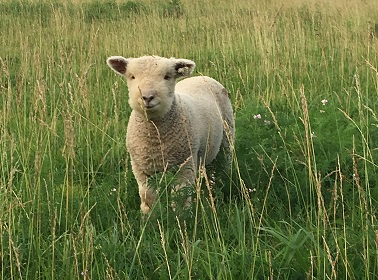
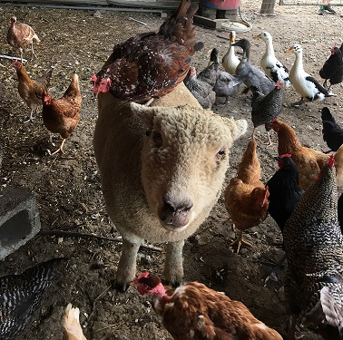

Yes, they are smiling
Meet our Southdown Baby Doll Sheep. Our Southdown Babydoll Sheep also have three primary purposes. Their fiber can be spun into yarn, they are excellent grazers for pasture management and can be an excellent source of meat for the table.
Southdown Baby Doll
 Our breeding pair will be used to start our own herd. We spin by had at this point but will be looking into spinning wheels here soon to be able to reduce the amount of time required to spin by hand.
Interesting Southdown Baby Doll Facts
- breed originated in East Sussex England around 200 years ago
- can live up to 15-16 years of age
- they are gentle and mix well with other animals
- they don't have horns also called polled
- fleece generally runs 19 to 22 microns, same class as cashmere
- one of the best to blend with other fibers due to their high number of barbs per inch
- are excellent deployed in vineyards and orchards since their short height prevents them from grazing on the inventory